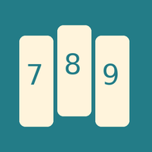

루미큐브
규칙 및 도움말
타일 14개로 시작합니다. 같은 색 연속 숫자 또는 서로 다른 색의 같은 숫자를 3개 이상 묶으세요. 첫 등록은 내 타일로 30점 이상입니다. 이후 테이블을 재배열할 수 있습니다. 모든 묶음이 유효해야 합니다. 조커는 숫자를 대신하며 남으면 30점입니다. 랙을 먼저 비우면 승리합니다. 선택한 타일을 새 묶음·기존 묶음·랙으로 이동하세요. 디지털판은 조커의 자유 재배열을 허용합니다.
새 게임 7종은 자체 제작 그래픽을 사용하는 비공식 구현입니다. 상표는 각 권리자에게 있습니다.